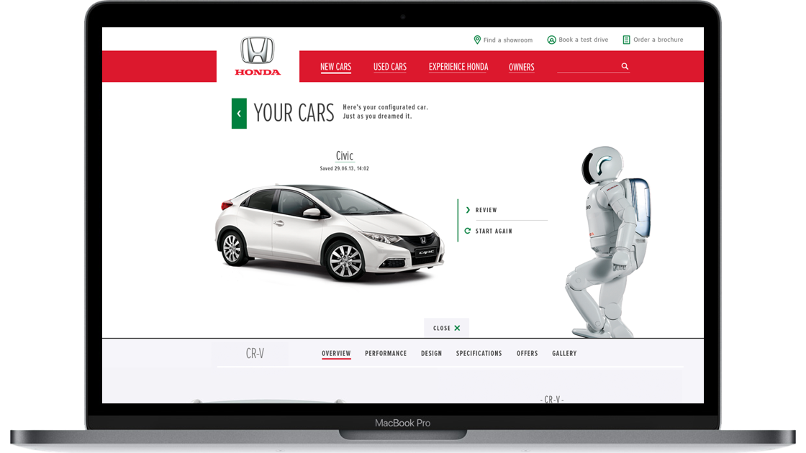
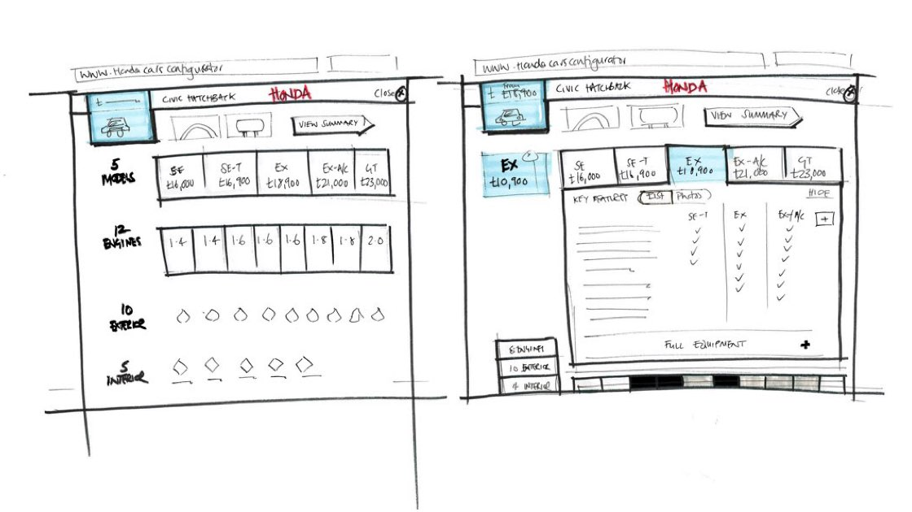
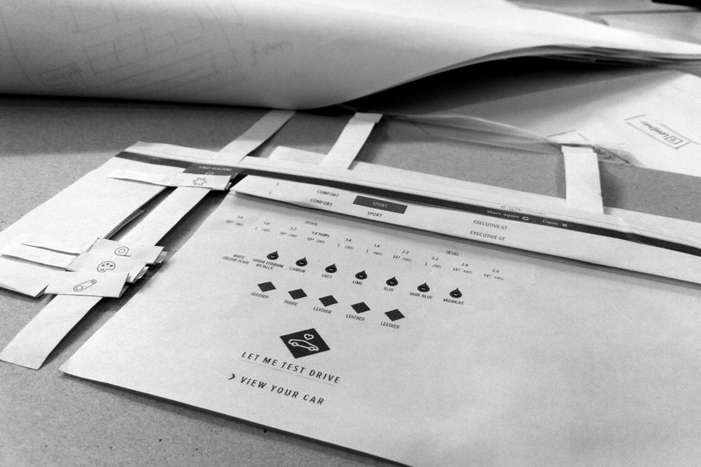
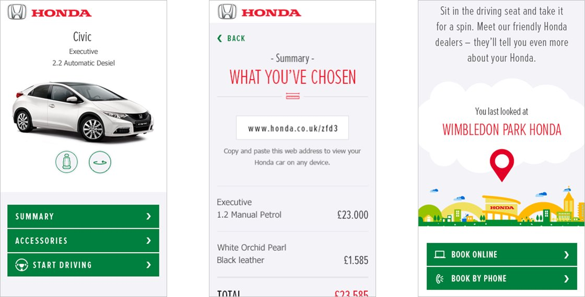
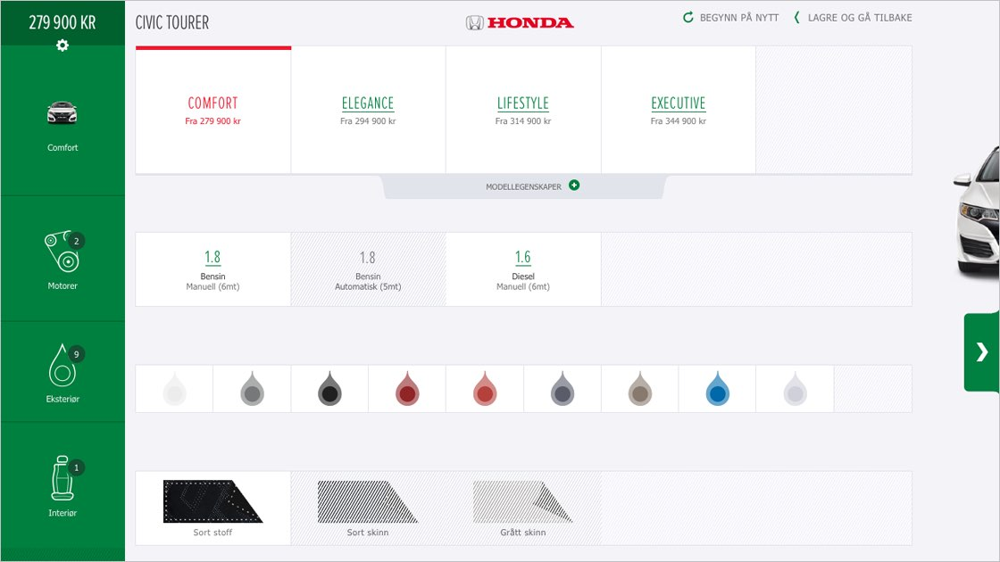
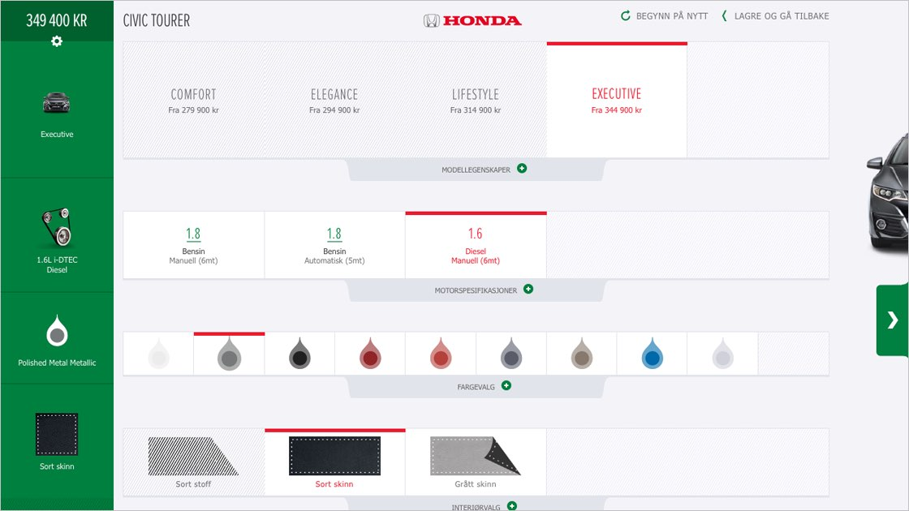
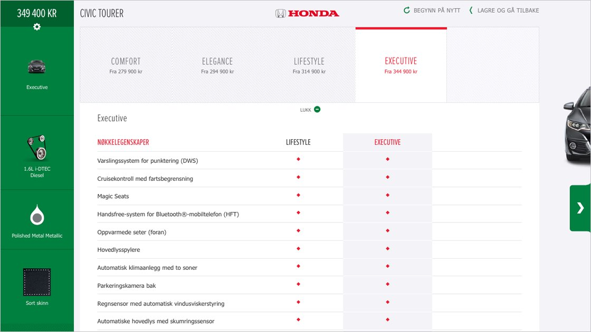

Honda car configurator
Enable users to create, personalise and share their dream Honda

Overview
A non-linear process that gave users maximum freedom around choices whilst understanding the dependencies. An integrated approach that didn't force the user to make the same selections twice, whilst considering journeys around the returning visits and eliminating the need for error messaging, simplifying the logic and development.
Working within a specific configurator stream to the Honda framework, I was the lead designer managing a team of UI and content designers whilst working closely with UX and technology.





